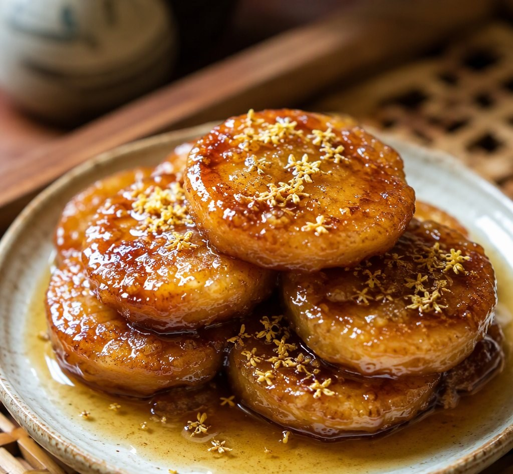

Stinky Tofu · 人均 ¥15
臭豆腐
外脆里嫩的黑色小方块，浇一勺红亮剁椒与蒜汁。闻着皱眉，吃着上瘾——这是长沙递给每个人的第一份见面礼。
点击查看详情 →Food Guide
长沙的胃，是被辣椒和糯米一起养大的。四味必吃，点击任意一道，查看推荐去处与人均价格。
外脆里嫩的黑色小方块，浇一勺红亮剁椒与蒜汁。闻着皱眉，吃着上瘾——这是长沙递给每个人的第一份见面礼。
点击查看详情 →长沙土生土长的中式茶饮，忌廉雪顶撒碧根果碎，茶香清而不腻。五一商圈排队太长？往巷子里走五十米就有下一家。
点击查看详情 →
夏夜的长沙属于口味虾：红亮虾壳裹满辣椒与紫苏，配一杯冰啤酒，辣得酣畅淋漓，是这座城市的深夜仪式。
点击查看详情 →
糯米团子在红糖油锅里滚到金黄，外裹焦糖脆壳、内里软糯拉丝。三块钱一个的甜，是长沙人从小吃到大的温柔。
点击查看详情 →Tips
五站经典、八处小众，一天时间刚刚好。